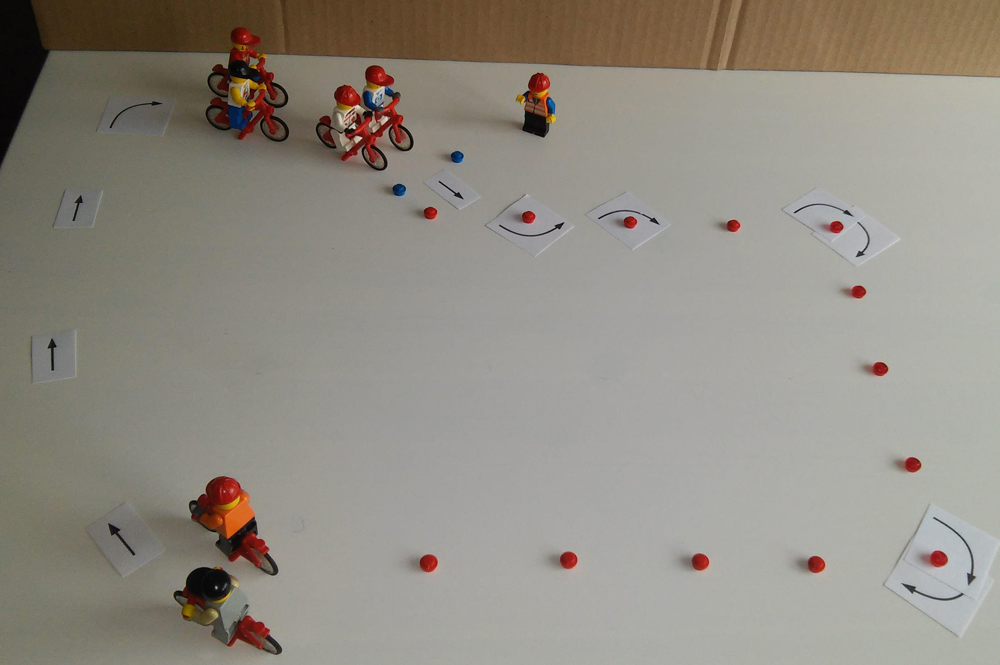
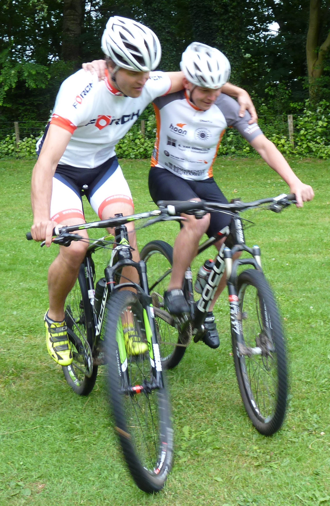
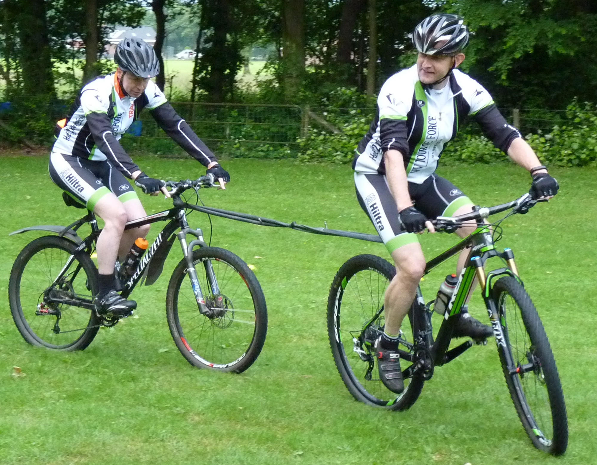

Auteur: Bart Lagerweij
Thema: Balans
Datum: 1 oktober 2016
Locatie: AR TV de Adelaar (Apeldoorn)
Aantal renners: 10
Niveau: Gemiddeld
Verbeteren van de balans. Renners ervan bewust maken dat balans zeer belangrijk is.
Tijd: 00.00
Renners: Verzamelen voor de trainer
Trainer: Welkom aan de renners. Vertellen wat we gaan doen.
Organisatie: Trainer neemt plaats vlak voor de renners, zodat iedereen hem goed kan verstaan.
Renners: Veiligheidscheck helm.
Trainer: Het afstellen van de helm door de snel sluiting en bandjes onder de oren af te stellen.
Organisatie:
Trainer laat de renners dit testen door het hoofd te buigen (hand boven de helm). Daarna bandjes afstellen, 2 vingers ruimte tussen kin en bandje en 1 vinger tussen wenkbrauw en helm. Veiligheidscheck fiets. Testen van de snel spanners, remmen voor/achter en of het stuur goed vast zit. Trainer legt uit wat we testen en dat dit voor de eigen veiligheid is.
Renners: Veiligheidscheck fiets.
Trainer: Testen van de snel spanners, remmen voor/achter en of het stuur goed vast zit.
Organisatie: Trainer legt uit wat we testen en dat dit voor de eigen veiligheid is.
Tijd: 00.05
Renners: Tik degene die de kip bij zich heeft.
Trainer:
Zet de renners bij het vierkant. 1 persoon is tikker. Hij probeert diegene te tikken die de kip bij zich heeft. Gooi de kip voordat je getikt wordt dus naar een ander. Alleen degene die de kip heeft kan getikt worden.
Wanneer ben je af?
Didactische aanwijzingen:
Technische aanwijzingen:
Organisatie:
Maakt een vierkant van hoedjes (8 stuks). Ongeveer 12 bij 12 meter. Afhankelijk van grootte groep. Wijs iemand aan als tikker. En geef iemand de kip.
Naar eigen inzicht een slechtere of betere tikker aanwijzen.
Tijd: 00.10
Trainer: Rij vanaf de vorige oefening met de hele groep de slalom in zijn geheel voor. Dan weet iedereen de route.
Organisatie: Maak een grote U met hoedjes. Zie de afbeelding hier onder. De ruimte tussen de hoedjes is 2 meter. Zorg voor een oneven aantal hoedjes aan elke zijde. Maak gerust een lekker grote U als je de ruimte hebt.

Tijd: 00.12
Renners: Slalom met zijn tweeën, arm over elkaars schouder.
Trainer:
Vertel dat er niets mooier is dan samen fietsen. En dat is letterlijk wat we gaan doen.
Doe aan de groep voor hoe je met de arm over elkaars schouder kunt blijven stil staan door elkaar in evenwicht te houden.
Didactische aanwijzingen:
Technische aanwijzingen:
Organisatie:
Zet de groep bij de start (2 blauwe hoedjes) op een rij.
Vraag een renner naar voren en doe het “arm over schouder” stil staan met deze renner voor.
Laat de groep dit 4 rondjes doen.
Na elke ronde wisselen van kant.

Tijd: 00.20
Renners: De renners slepen elkaar met 2 binnenbanden.
Trainer:
Leg uit dat ook dit een balans oefening is.
Didactische aanwijzingen:
Technische aanwijzingen:
Na de oefening:
Leg uit dat het voor kan komen dat je iemand met pech moet helpen door hem te slepen. Als je 2 binnenbanden bij je hebt, dan weet je vanaf nu wat je moet doen.
Organisatie:
Zet de renners weer op rij bij de start.
Laten zien hoe je 2 binnenbanden aan de fiets bevestigd. Vraag 2 renners naar voren. Maak hun fietsen aan elkaar. Via een lus aan het stuur en met een lus aan het zadel pen.
Stel renners gerust als ze gezorgd beginnen te kijken. Help renners die het niet voor elkaar krijgen.
Laat ze eerst even “testen” door 1 rustig rondje te rijden (niet slalom).
Dan 2 rondjes slalommen via de hoedjes.
Wisselen voor/achter ( weer 2 rondjes)

Tijd: 00.28
Trainer:
Organisatie: Kort voor de renners gaan staan zodat ze je goed kunnen verstaan.